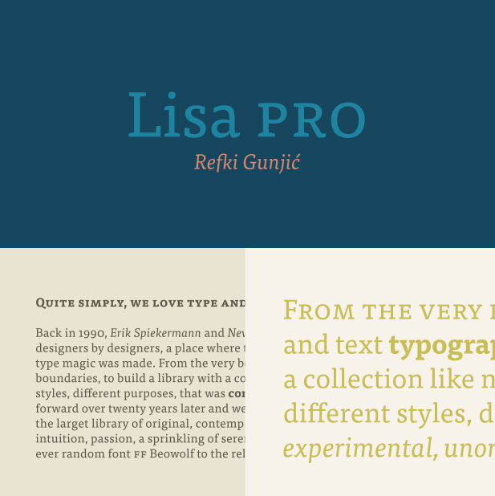

Typefaces

Lisa Pro
About this font family
The family has 14 weights, ranging from Thin to Black (including italics) and is ideally suited for advertising and packaging, book text, editorial and publishing, logo, branding and creative industries, poster and billboards, small text as well as web and screen design.
Lisa Pro provides advanced typographical support with features such as ligatures, small capitals, alternate characters, case-sensitive forms, fractions, and super- and subscript characters. More …
Typeface details
- Designer: Refki Gunjić
- Date: 2003–2007
- Classification: serif
- Recommendations: advertising, books, posters, screen
- Licensing options: desktop, webfont, app